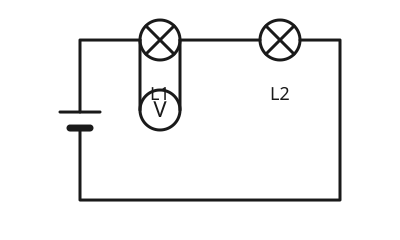

Das Voltmeter
Mit einem KI-Tutor lernen
Ein KI-Tutor erklärt dir diese Seite und hilft dir bei den Übungen. Wähl deinen Assistenten:
Mit Claude öffnen Mit ChatGPT öffnen Mit Mistral Vibe öffnen
Du nutzt dein eigenes Konto beim Anbieter. Der Assistent ist kein Angebot von lernapps.net: lernapps liefert nur Inhalte und Übungen. Die Wahl gilt für alle Seiten, nur auf diesem Gerät.
Wie misst man die Spannung?
Auch die Spannung siehst du nicht. Das Messgerät dafür heißt Voltmeter. Anders als das Amperemeter baust du es nicht in den Stromweg ein, sondern schließt es neben dem Bauteil an.
Das Voltmeter parallel anschließen
- Voltmeter
Ein Voltmeter misst die Spannung zwischen zwei Punkten. Man schließt es parallel zu dem Bauteil an, dessen Spannung man messen will.
Die Spannung misst man zwischen zwei Punkten, hier an den beiden Enden einer Lampe. Du führst von jedem Ende eine Leitung zum Voltmeter. Der Stromkreis bleibt dabei unverändert geschlossen: Du musst ihn nicht auftrennen. Man sagt, das Voltmeter liegt parallel zur Lampe.

Das Voltmeter ist an beide Enden von L1 angeschlossen. Der Stromkreis bleibt geschlossen.
Quelle: eigene Zeichnung. Lizenz: CC-BY-4.0.Nicht in Reihe
Ein Voltmeter in den Stromweg einzubauen, wäre falsch. Dann würde fast kein Strom mehr fließen, und die Lampen würden dunkel. Das Voltmeter gehört immer neben das Bauteil.
Ablesen: Wie beim Amperemeter schaust du auf die Beschriftung der großen Striche, zählst die kleinen Striche dazwischen und liest den Zeiger von oben ab. Die Einheit ist hier Volt (V).
Eine Spannung ablesen
Zeiger auf einem großen Strich

Skala von 0 bis 10 V, ein großer Strich alle 2 V, dazwischen ein kleiner.
Quelle: eigene Zeichnung. Lizenz: CC-BY-4.0.Der Zeiger steht auf dem kleinen Strich zwischen 6 und 8. Der kleine Strich liegt in der Mitte, also bei 7. Die Spannung beträgt .
Übung
Übung
Lösung
B, parallel zu L1, an beide Enden der Lampe. richtige Antwort
Das Voltmeter liegt zwischen den beiden Enden von L1 und misst deren Spannung.
A, in der Leitung zwischen den Lampen.
Dort würdest du das Voltmeter in Reihe setzen. Dann fließt fast kein Strom mehr.
C, parallel zu beiden Lampen.
Dort misst du die Spannung beider Lampen zusammen, nicht die von L1 allein.
Die Spannung an L1 misst du, indem du das Voltmeter parallel zu L1 anschließt.
Mehr dazu:
Übung
Lösung
Richtige Antwort: 7 V (erlaubte Abweichung: 0,2 V)
Der Zeiger steht auf dem kleinen Strich zwischen 6 und 8, also bei 7 V.
Mehr dazu:
Übung
Lösung
Richtige Antwort: Die Aussage stimmt nicht.
Das Amperemeter kommt in Reihe in den Stromweg, das Voltmeter parallel neben das Bauteil.
Mehr dazu:
Übung
Lösung
Das Voltmeter misst zwischen zwei Punkten, es braucht keinen Strom hindurch. richtige Antwort
Du hängst es an die Enden des Bauteils an. Der Kreis bleibt geschlossen.
Weil die Spannung durch die Luft gemessen wird.
Das Voltmeter braucht Anschlüsse an beiden Enden des Bauteils.
Weil das Voltmeter selbst als Leitung dient.
Das Voltmeter liegt neben dem Bauteil, nicht im Stromweg.
Die Spannung gilt zwischen zwei Punkten. Das Voltmeter wird an beide angeschlossen.
Mehr dazu: